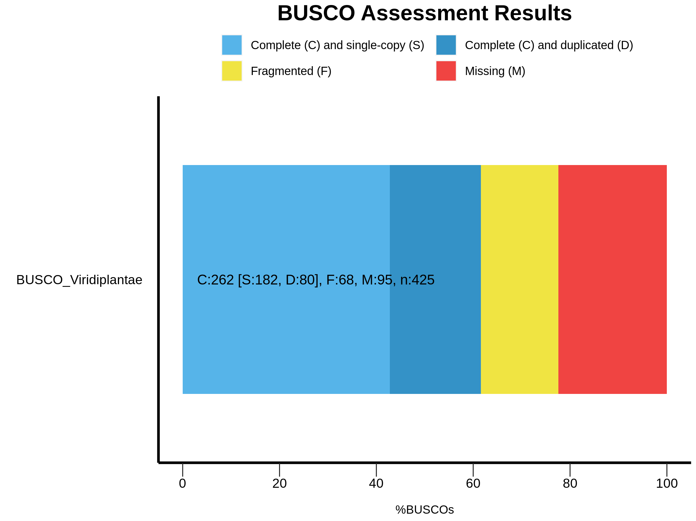

5 De novo Assembly with Trinity
Trinity is a promising tool for de novo full-length transcriptome assembly that continually developed since 2011. Trinity assembles reads by constructs many individual de Bruijn graphs, each representing the transcriptional complexity at a given gene or locus, that originated from the different nucleotide in the same position, and then processes each graph independently to extract full-length splicing isoforms and to tease apart transcripts derived from paralogous genes (Grabherr et al. 2011; Haas et al. 2013). Each assembled contig is will refer to a transcript.

Trinity can construct genomes without genome information and enables transcript construction in non-model organisms where genome assembly is not yet available, or that do not achieve successful chromosome-level or full assembly. Downstream processes, such as transcript assembly completeness analysis, transcript abundance estimation, and identification of differentially expressed genes, can also be performed with Trinity and its built-in utilities commands.
For de novo assembly in fast and efficient way for limited computational resources available, we prepared the downsized reads that derived from the SRA accessions that we already retrieved from NCBI SRA database from the previous chapter.
During de novo assembly, the longest and the heaviest computation resource required for constructing and stitching billions of de Bruijn graphs. Very deep sequencing libraries may failed of these processes. Therefore, normalizing or downsizing sequence reads before de novo assembly is efficient way to proceed it. In brief, we downsized sequence reads using built-in Trinity command insilico_read_normalization.pl as follow. This just inform all participant to the source of raw data that they will perform assembly.
insilico_read_normalization.pl \
--seqType fq \
--JM 100G \
--max_cov 10 \
--left 01_Rawdata/*_1.fastq \
--right 01_Rawdata/*_2.fastq \
--pairs_together \
--CPU 50 \
--output 03_assemblyTrinity insilico_read_normalization.pl uses forward and reverse reads input from --left and –-right parameters by reduce the maximum coverage depth (--max_cov) observed to 10x, and retain only paired reads in --pairs_together.
The output file given as follow:
-rw-r--r-- 1 jiratchaya jiratchaya 1005390788 Mar 8 10:34 left.fq
-rw-r--r-- 1 jiratchaya jiratchaya 1005390788 Mar 8 10:34 right.fq5.1 Running Trinity
Trinity is run via the script Trinity:
Trinity --seqType fq \
--max_memory 6G \
--CPU 2 \
--left /opt/Cpa_RNASeq/insilico_norm_reads/left.fq \
--right /opt/Cpa_RNASeq/insilico_norm_reads/right.fq \
--output Trinity_2023-03-08Estimated time usage: ~24 hr
By this command, Trinity take the input forward and reverse reads from --left and –-right, respectively. By default, de novo assembly with Trinity will perform in silico read normalization by itself. Since we have already normalized the sequence reads file prior to assembly, this step will skip the normalization step by add --no_normalize_reads to the command. All other arguments will use with the default parameters.
The given results in ~/Cpa_RNASeq/03_assembly directory are:
-rw-r--r-- 1 jiratchaya jiratchaya 77M Mar 8 11:34 Trinity_2023-03-08.Trinity.fasta
-rw-r--r-- 1 jiratchaya jiratchaya 3.0M Mar 8 11:34 Trinity_2023-03-08.Trinity.fasta.gene_trans_map*.Trinity.fastais the assembled transcript files*.Trinity.fasta.gene_trans_mapis tab-separated file of trinit genes (left column) and the belonging transcript (right column)
jiratchaya@pslab1:~/Cpa_RNASeq/03_assembly$ head Trinity_2023-03-08.Trinity.fasta.gene_trans_map
TRINITY_DN43810_c0_g1 TRINITY_DN43810_c0_g1_i1
TRINITY_DN43890_c0_g1 TRINITY_DN43890_c0_g1_i1
TRINITY_DN43840_c0_g1 TRINITY_DN43840_c0_g1_i1
TRINITY_DN43847_c0_g1 TRINITY_DN43847_c0_g1_i1
TRINITY_DN43815_c0_g1 TRINITY_DN43815_c0_g1_i1
TRINITY_DN43872_c0_g1 TRINITY_DN43872_c0_g1_i1
TRINITY_DN43845_c0_g1 TRINITY_DN43845_c0_g1_i1
TRINITY_DN43867_c0_g1 TRINITY_DN43867_c0_g1_i1
TRINITY_DN43843_c0_g1 TRINITY_DN43843_c0_g1_i1
TRINITY_DN43844_c0_g1 TRINITY_DN43844_c0_g1_i1The de novo assembly part may take hours to days to proceed since this process in one of the time and resource-consuming in transcriptome data analysis. So that’s OK if we couldn’t accomplish the assembly as of the limited time for this workshop.
We have prepared the assembled transcripts for further analyses. You can use the following command to copy assembly files to your working directory.
# your current working directory: ~/Cpa_RNASeq/
cp /opt/Cpa_RNASeq/denovo_assembly/Trinity_2023-03-08.Trinity.fasta* 03_assembly/5.2 Transcript Assembly Quality Assessment
According to suggestions from Trinity wiki of transcriptome assembly quality assessment, it’s worth to determine how good of the quality of assembled transcript. Several approaches available for characterize the quality of your assembly. However, in this workshop we’ll perform only two approaches
5.2.1 Examining gene and contig Nx statistics
We can compute Nx statistics from the assembled transcripts, as well as GC content, number of assembled transcripts, mean and median of contig length. from TrinityStats.pl command.
The following script in the Trinity toolkit will compute these values for you like so:
# Go to assembly directory
cd ~/Cpa_RNASeq/03_assembly
# Run TrinityStats
TrinityStats.pl Trinity_2023-03-08.Trinity.fastaExpected time used: < 1 min
Expected output from the terminal screen:
################################
## Counts of transcripts, etc.
################################
Total trinity 'genes': 49389
Total trinity transcripts: 66772
Percent GC: 66.62
########################################
Stats based on ALL transcript contigs:
########################################
Contig N10: 4225
Contig N20: 3083
Contig N30: 2464
Contig N40: 2014
Contig N50: 1678
Median contig length: 758
Average contig: 1106.61
Total assembled bases: 73890513
#####################################################
## Stats based on ONLY LONGEST ISOFORM per 'GENE':
#####################################################
Contig N10: 3987
Contig N20: 2871
Contig N30: 2280
Contig N40: 1862
Contig N50: 1531
Median contig length: 624
Average contig: 984.38
Total assembled bases: 48617582The N10 through N50 values show the value of at least x% of number of assembled contigs have Nx nucleotide in length. For example, in contigs (isoform) level, the N50 indicates at least half (50%) of number of the assembled transcripts are 1,678 nucleotides in length, whereas N50 of the longest isoform that represent the gene is 1,531 nucleotides in length.
5.2.2 Benchmarking Universal Single-Copy Orthologs (BUSCO) analysis
BUSCO reported the transcriptome assembly completeness by evaluate whether the set of assembly recovered a whole set of universal functional genes referred from orthologous sequence from neighbor species. BUSCO metric is complementary to technical metrics like N50 as we did using TrinityStats.
BUSCO v4 and v5 use lineage datasets information from OrthoDB v10. You can search all available lineage datasets using the following command:
# Activate conda environment
conda activate busco
# List all lineage datasets in OrthoDB v10
busco --list-datasetsAs of March 2023, more than 100 lineage datasets available in OrthoDB v10.
Generally the lineage to select for your assessments should be the most specific lineage available, e.g. for assessing Cyanophora transcriptome assembly data you may choose the Viridiplantae or Chlorophyta lineages rather than the metazoa lineage. Here we’ll select Viridiplantae lineage dataset to evaluate the single-copy orthologs in Cyanophora assembled transcriptome using the following command.
# Go to current working directory
cd ~/Cpa_RNASeq/03_assembly
# Run BUSCO
busco --mode transcriptome \
--in Trinity_2023-03-08.Trinity.fasta \
--lineage_dataset /opt/Cpa_RNASeq/busco_downloads/lineages/viridiplantae_odb10 \
--out BUSCO_Viridiplantae \
--cpu 2 \
--offlineEstimated time usage: ~30-35 min
In this command, BUSCO runs in transcriptome mode by the required input file.
If we didn’t make it in time, the backup data in backup BUSCO results will keep in: /opt/Cpa_RNASeq/BUSCO_Viridiplantae/, and BUSCO Viridiplantae lineage dataset is also in /opt/Cpa_RNASeq/busco_downloads/.
The classification results from BUSCO will save to BUSCO_Viridiplantae in your working directory, as well as print out to the terminal as follow:
2023-03-08 00:05:05 INFO: Results: C:61.6%[S:42.8%,D:18.8%],F:16.0%,M:22.4%,n:425
2023-03-08 00:05:06 INFO:
--------------------------------------------------
|Results from dataset viridiplantae_odb10 |
--------------------------------------------------
|C:61.6%[S:42.8%,D:18.8%],F:16.0%,M:22.4%,n:425 |
|262 Complete BUSCOs (C) |
|182 Complete and single-copy BUSCOs (S) |
|80 Complete and duplicated BUSCOs (D) |
|68 Fragmented BUSCOs (F) |
|95 Missing BUSCOs (M) |
|425 Total BUSCO groups searched |
--------------------------------------------------The BUSCO result shows the composition of the expected gene content within the assembled transcriptome. The BUSCO result can be divided into Complete and Single-Copy, Complete and Duplicated, Fragmented or Missing BUSCOs.
Now we’ll generate a BUSCO plot.
# Working directory: cd ~/Cpa_RNASeq/03_assembly/assessment
generate_plot.py --working_directory BUSCO_ViridiplantaeEstimated time usage: < 1 min
Expected graphical should be as follows. And explanation on each type of BUSCO results can be found at the BUSCO’s Documentation.
